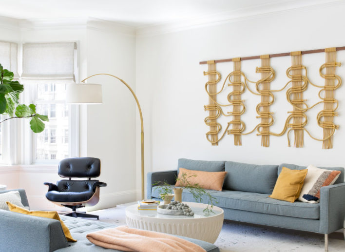

Sofa Furniture, Pick it Eloquent and Durable
There's not any denying that couch is most likely the most essential item of furniture in almost any household and consequently, it's the best assortment of styles and attributes offered for sale.
Because there are lots of styles, it might actually be a lot easier to categorize them in to sectional or sleeper kinds that could be further broken using the fashions of the springs that typically done in four different styles: tight spine, اسعار الانتريهات attached cushion back, loose pillow back along with multi pillow backagain.
Tight back couches have an extremely business seat and one has to sit upright since they don't have encouraging cushion. It's acceptable for those that don't have a lot of time since the cloth normally employed for this kind of sofas is quite simple to wash and there are no cushions to sew.

Attached pillow back sofas have thicker seats and backs since the stuffed cushions are stitched into the backs of their couches to stop them to maneuver around. However, since the cushions are permanently attached, so it's more challenging to wash and'conceal' whenever they have stained.
Sofas which have loose pillow backs possess precisely the exact same variety of back and seat cushions. The rear cushions are typically reversible and may be utilized for re-stuffing and cleanup functions. The relaxation of the form of couches is contingent upon the high quality and stability of the design of their chair and back cushions in addition to the thickness of the couch itself.
Multi pillow back sofas can also be called scatter back couches plus they have a bigger quantity of back cushions than sofa cushions, which may be scattered all over the couches to make a casual appearance. انتريهات مودرن 2021 This sort of couches is generally more comfortable because the dimensions of these couches have a tendency to be bigger and heavier compared to other forms.
What's more, they may also be categorized by the kinds of underwear (dressmaker or boxpleat), arms (roll arm, Charles of London along with tuxedo arm), and also foundation therapies (upholstered foot and plinth foundation ).
Selecting the most appropriate sort of couch in accordance with your lifestyle is extremely a good idea to find the utmost comfort from it. By way of instance, in the event the owner likes to lie near the couch, then it makes sense to pick out a couch with arms which have lower corners compared to a top tuxedo arm.
Fabric of the couch also plays an essential part, not just it should have a nice color and layout, it has to also be durable and simple to wash, since the expense of replacement in the event of accidental damages may come alongside a completely different couch.